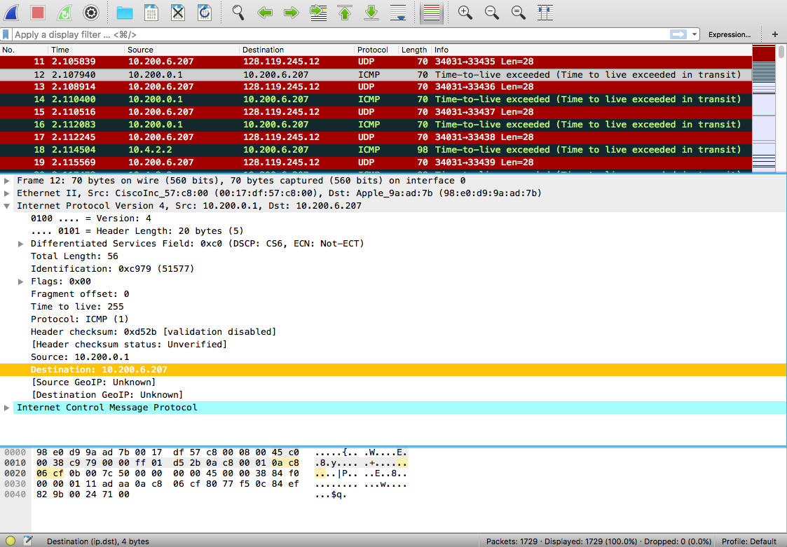

Questions
- Define a Finite State Machine
A finite-state machine is a mathematical model of computation used to design both computer programs and sequential logic circuits. It is conceived as an abstract machine that can be in one of a finite number of states. (Wikipedia)
- Explain what is ARQ and state the capabilities required of it
Automatic Repeat reQuest(ARQ) protocols are control messages sent back by the receiver to the sender letting them know if the packet was received correctly or if there was an error. (Pg. 207)
ARQ required capabilities
- Error Detection
- Receiver Feedback
- Retransmission
- What role does the Reliable Data Transfer play in a network connection?
TCP's reliable data transfer service ensures that the data stream that a process reads out of its TCP receive buffer is uncorrupted, without gaps, without duplication, and in sequence; that is, the byte stream is exactly the same byte stream that was sent by the end system on the other side of the connection. (Pg. 242)
- Which range of port numbers are classified as "well-known" or reserved?
The port numbers ranging from 0 to 1023. (Pg. 192)
- What is the difference between Go-Back-N (GBN) and Selective Repeat (SR)?
If a missing or damaged packet is detected, GBN would require all the packets after including and after that packet to be resent. On the other hand SR would only resend that particular packet. (Pg. 218 and Pg. 223)
- State two network layer services and their function
- Guaranteed delivery: Makes sure that the packet arrives at its destination
- Guaranteed delivery with bounded delay: Makes sure a packet is delivered within a specified host-to-host delay bound
- What purpose does a congestion window serve?
The congestion window, imposes a constraint on the rate at which a TCP sender can send traffic into the network. (Pg. 269)
- What is the purpose of a flow-control service
TCP provides a flow-control service to its applications to eliminate the possibility of the sender overflowing the receiver's buffer. Flow control is thus a speed-matching service matching the rate at which the sender is sending against the rate at which the receiving application is reading. (Pg. 250)
- What is the difference between Routing and Forwarding?
Forwarding involves the transfer of a packet from an incoming link to an outgoing link within a single router, while Routing refers to the network-wide process that determines the end-to-end paths that packets take from source to destination. (Pg. 308)
- How many bits does an internet checksum comprise of?
16 bits

Lab 5: IP Protocol
All pertinent labs can be found here
Description
This lab focuses on the IP datagram. This can be done by analyzing the trace of IP datagrams as they are sent and received by the execution of traceroute.
How does traceroute work?
Traceroute as the name suggests is a tool to display the route/path and measure transit delays of packets across an IP network.
It operates by sending one or more datagrams with the time-to-live (TTL) field in the IP header set to 1. It carries on doing so incrementing the value by 1 each time.
On the other hand every time a router receives a datagram, it decrements the value by 1. Thus, for each instance where the TTL reaches 0, the router returns an ICMP (Internet Control Message Protocol) message to the host.
In this way datagrams will hop between routers based upon their closeness and identify the routers between the host and its destination by looking at the IP addresses in the datagrams containing the ICMP TTL-exceeded messages.

- What is the IP address of your computer?
10.200.6.207
- What is the value in the Identification field?
51577
- How many bytes are in the IP header? How many bytes are in the payload of the IP datagram? Explain how you determined the number of payload bytes.
There are 20 bytes in the IP header which leaves 36 bytes for the payload of the IP datagram because we were sending a packet of length 56 bytes.
- Has this IP datagram been fragmented? Explain how you determined whether or not the datagram has been fragmented.
The fragment offset is set to 0, therefore, the packet has not been fragmented.
- Which fields in the IP datagram always change from one datagram to the next within this series of ICMP messages sent by your computer?
The header checksum and the Identification changes for each datagram.
- Which fields stay constant? Which of the fields must stay constant? Which fields must change? Why?
- Fields that stay constant:
- Version(IPv4)
- Length of header
- Source IP
- Destination IP
- Upper layer protocol
- Fields that must change:
- The header checksum
- Identification
Textbook Questions
P.5 (Pg 289)
- Suppose that the UDP receiver computes the Internet checksum for the received UDP segment and finds that it matches the value carried in the checksum field. Can the receiver be absolutely certain that no bit errors have occurred? Explain
No, the receiver cannot be absolutely certain that no bit errors have occurred because of the way checksum is calculated. If two bits were flipped for instance from 1 and 0 to 0 and 1 the sum would still remain the same even though their is an error.
P24. (Pg 293)
- Answer true or false to the following questions:
- With the SR protocol, it is possible for the sender to receive an ACK for a packet that falls outside of its current window.
True
- With GBN, it is possible for the sender to receive an ACK for a packet that falls outside of its current window.
True
- The alternating-bit protocol is the same as the SR protocol with a sender and receiver window size of 1.
True
- The alternating-bit protocol is the same as the GBN protocol with a sender and receiver window size of 1.
True